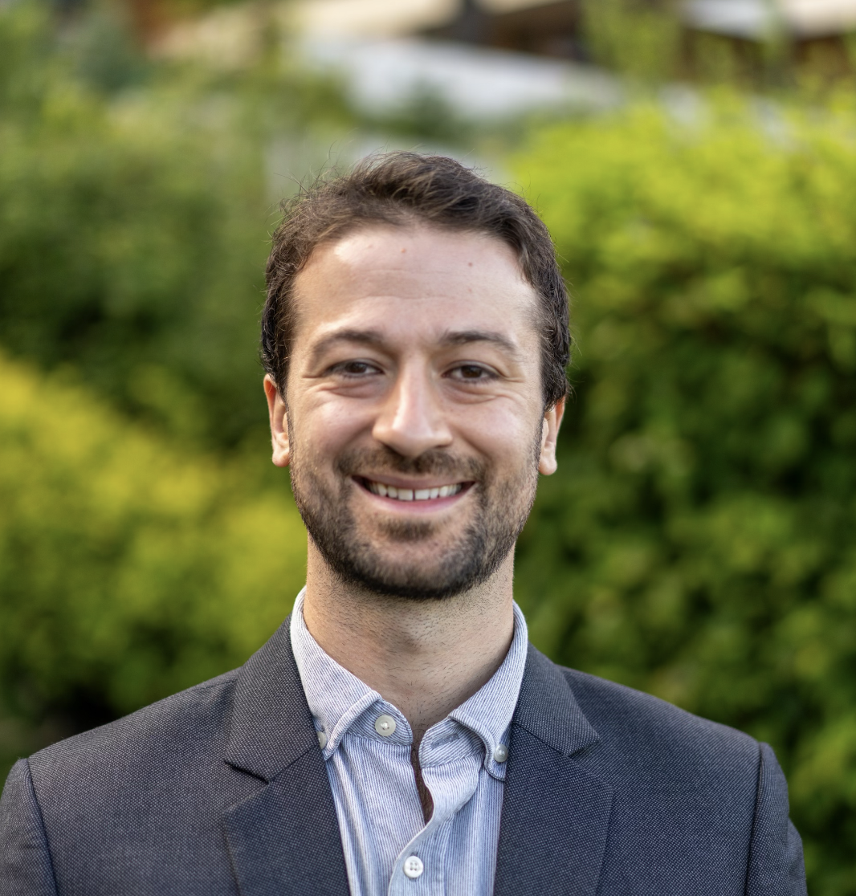

My research centers on improving decision quality in consumer-facing AI systems. I pursue research questions across two streams: 1) how the framing of AI recommendations and design of AI systems influence judgement and prediction at the consumer-AI interface, and 2) how hidden patterns in AI reasoning and decision-making impact autonomous service systems. My work has been published in Manufacturing & Service Operations Management and PNAS Nexus, and featured on Fortune.com and Time.com.
I earned my PhD from Harvard Business School in May 2026 under the advisement of Kris Johnson Ferreira, and now research autonomous AI as a Senior Applied Scientist at Microsoft. I will be presenting at the 2026 MSOM SIG Day (Sunday, 7/12).